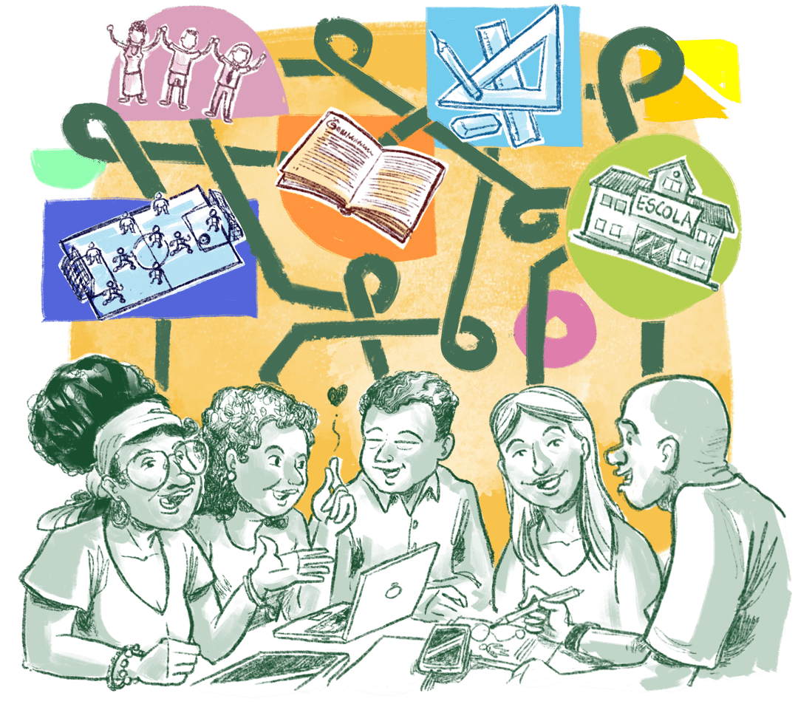
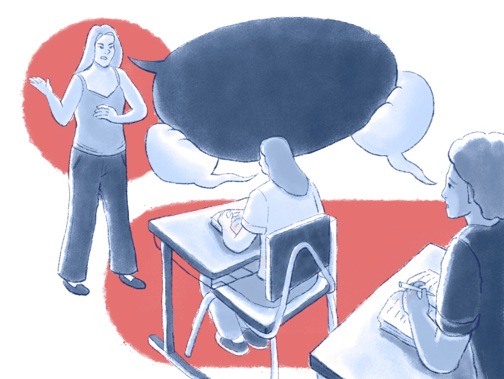
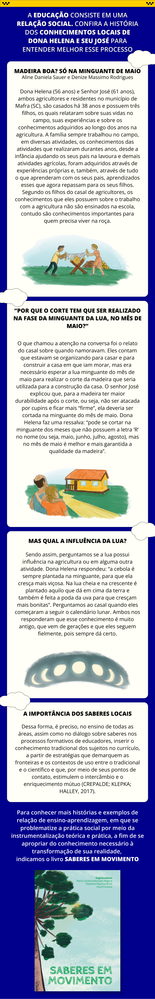

CAPÍTULO 1
Desafios e perspectivas sobre ensino e aprendizagem na EaD

Olá, cursista!
Você se formou na escola já há um tempo, entretanto, tornou-se um profissional da educação. Nesse sentido, atuando como professor, gestor ou técnico-administrativo, dificilmente deixou de ser estudante, pois compreende que o processo formativo é contínuo, isto é, ocorre ao longo da vida e do exercício profissional. Desse modo, continuamos a nos formar quando realizamos cursos de aperfeiçoamento ou de pós-graduação como este e, também, durante aquelas pausas para o café em que trocamos ideias e experiências com nossos colegas e refletimos sobre nossa própria prática, buscando aprimorá-la.

Título: Processos formativos contínuos
Fonte: Prosa (2024).
Aqui estamos, então, num curso de pós-graduação voltado a pessoas que atuam (ou que pretendem atuar) na Educação Profissional e Tecnológica (EPT). Certamente, você já realizou outros cursos sobre EPT e tem (ou pretende ter) alguma experiência na área. Mas o que talvez seja uma novidade em sua trajetória é fazer o curso assim, em sua casa ou em outro local em que se sinta confortável, estudando no horário mais conveniente em sua rotina, interagindo com colegas e professores por meio do computador ou do celular. Essas características são específicas de cursos ofertados na modalidade EaD.
Mas antes de adentrarmos em alguns tópicos, reflita: estamos falando de "o EaD" ou "a EaD"? Ensino a Distância ou Educação a Distância?
Ao nos referirmos a ensino, é possível que a primeira ideia que surja seja a figura do professor como o detentor e transmissor de conhecimentos a estudantes que o ouvem com atenção para, posteriormente, reproduzirem as informações adquiridas nas avaliações.

Título: Professor como o detentor e transmissor de conhecimentos
Fonte: Prosa (2021a).
Elaboração: Prosa (2024).
Já quando pensamos em educação em sentido amplo, temos em mente uma prática social que envolve aprendentes e ensinantes interagindo em torno de algum saber considerado importante para promover o ser humano e sua vida em sociedade. Desse modo, a educação consiste numa relação social. Quando escolar, é pedagogicamente organizada, torna-se um processo formal e intencional de ensino-aprendizagem dos conteúdos (culturais, científicos e tecnológicos) construídos historicamente pela humanidade. Nessa relação de ensino-aprendizagem, cabe aos professores problematizarem, junto aos estudantes, a prática social e auxiliá-los, por meio da instrumentalização teórica e prática, a se apropriarem do conhecimento necessário à transformação de sua realidade.

Título: A educação como relação social
Fonte: Saberes em Movimento (2019).
Elaboração: Prosa (2024).
Nosso curso está apenas começando, mas você já chegou ao primeiro momento para refletir.
Ao longo desta e das demais unidades temáticas do curso de especialização, você encontrará várias ocorrências da caixa que está logo abaixo, chamada “para refletir”. Nelas, você encontrará questões, muitas vezes acompanhadas de recursos como vídeos ou leituras complementares, que ajudarão no aprofundamento dos temas levantados no curso e na composição do seu Memorial. Não se esqueça de seguir as orientações do seu tutor para o registro das reflexões no Memorial!

Para refletir: ensino e educação
- O que você diria sobre essa distinção entre ensino, em sentido estrito, e educação, em sentido amplo? Você concorda com ela?
- Procure lembrar da sua trajetória como estudante, nos tempos de escola. Você sentia diferença entre aqueles professores que pareciam apenas "passar o conteúdo" e aqueles que buscavam educar, nesse sentido mais amplo?
- E agora, na sua prática profissional no âmbito da EPT, você atua mais como alguém que ensina ou como um educador?
Seguindo as orientações do seu tutor, procure anotar essas reflexões no seu Memorial, que servirá como registro de seus estudos, ajudará na elaboração do Plano de Formação e, ao final, na elaboração do TCC.